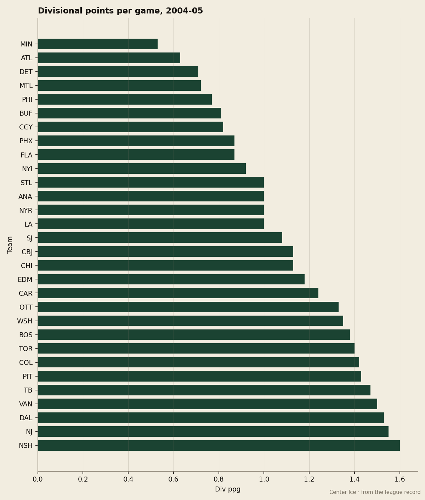
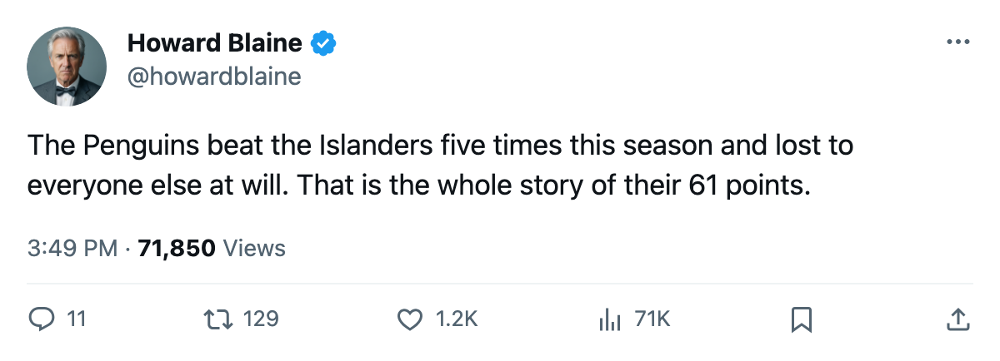

NJ
NJ PHI
PHIThe Season Series Report: Pittsburgh plays 1.43 points a night inside the Atlantic and 0.85 outside it, the widest split in hockey
The Penguins are 4th in the league in divisional points per game and 4th-worst outside their division, and the standings have them 3 points back of a playoff spot
 Howard BlaineSenior writer, The Blaine Rankings · The Hockey Gazette
Howard BlaineSenior writer, The Blaine Rankings · The Hockey Gazette
 Vincent Lecavalier84 has 105 points and the
Vincent Lecavalier84 has 105 points and the  Tampa Bay Lightning Lightning are 3rd in the East.
Tampa Bay Lightning Lightning are 3rd in the East.  Jaromir Jagr90 has 115 and the
Jaromir Jagr90 has 115 and the  Washington Capitals Capitals are 4th. The Atlantic Division's most interesting construction this season sits at the bottom of its own conference: the
Washington Capitals Capitals are 4th. The Atlantic Division's most interesting construction this season sits at the bottom of its own conference: the  Pittsburgh Penguins Penguins.
Pittsburgh Penguins Penguins.
The Penguins have produced 20 points in 14 divisional games, a clip of 1.43 points per game that ranks 4th in the league behind only Nashville, New Jersey and Tampa Bay. Outside the Atlantic, across 48 games, they have managed 41 points, a clip of 0.85, which ranks 4th-worst in hockey, ahead of only Ottawa, Calgary and Chicago. No other club in the league swings as far between those two rates.

The arithmetic of the Atlantic gives Pittsburgh a standing its play against the rest of the league does not support. Inside the division they are 7 wins, 2 overtime wins, 3 regulation losses, 2 overtime losses, and they have outscored divisional opponents 48 to 39. Outside the division, the 41 points in 48 games come against a field that gives them nothing, and the Penguins sit 11th in the East at 61 points, 3 back of the 8th-place  New York Islanders Islanders.
New York Islanders Islanders.
The schedule gives and the schedule takes
The Penguins have 20 games left and 6 of them are inside the division. The remaining 14 sit against clubs the Penguins have beaten very rarely. The next four games for Pittsburgh are all outside the Atlantic: at Nashville on Sunday, at Colorado on Tuesday, at Dallas on Wednesday, at Phoenix on Friday. Against those four clubs the Penguins will face the same construction that has produced 0.85 points a night, opponents from outside the Atlantic.
The Atlantic is a strong division on paper. New Jersey holds 85 points and 2nd in the conference, the Islanders hold 64 and the 8th seed, and Philadelphia has scored 209 goals, 6th in the conference. Pittsburgh beats all of these clubs and loses to the rest.
The season series is the whole case
Against the Islanders, a club in the 8th spot, the Penguins are 4 regulation wins and 1 overtime win in 5 meetings, a 10-point haul to the Islanders' 1. Against the Rangers it is 2 regulation wins, 1 overtime win, 1 regulation loss in 4 meetings. Against the Flyers, a single meeting, a single loss. Against New Jersey the record is 1 regulation win, 1 regulation loss, and 2 overtime losses.
Outside the division, the losses are not close. The Penguins have been outscored 205 to 232 across the season, and the +9 divisional goal differential from q1 is all that keeps the overall number from being considerably worse. The divisional scoring balance is the Penguins' only positive, built on beating the same four clubs over and over while the rest of the league takes points from them.
Ottawa is the other case
The only club in the league with a comparable split is the  Ottawa Senators Senators at 1.33 inside the Northeast against 0.83 outside, the next-widest spread after Pittsburgh's. Ottawa has 20 points in 15 divisional games and a +9 goal differential inside the division, against an overall minus-13 for the season. The Senators sit 12th in the East despite
Ottawa Senators Senators at 1.33 inside the Northeast against 0.83 outside, the next-widest spread after Pittsburgh's. Ottawa has 20 points in 15 divisional games and a +9 goal differential inside the division, against an overall minus-13 for the season. The Senators sit 12th in the East despite  Daniel Alfredsson88 at 89 points and
Daniel Alfredsson88 at 89 points and  Martin Havlat86 at 80, because the non-divisional schedule has erased what the divisional schedule produced.
Martin Havlat86 at 80, because the non-divisional schedule has erased what the divisional schedule produced.
The difference between Pittsburgh and Ottawa is what each does with the remaining schedule. Ottawa has 5 divisional games left and 14 outside. Pittsburgh has 6 inside and 14 outside. The two clubs are 1 point apart in the standings and face nearly identical remaining arithmetic, but the Penguins hold the Islanders head-to-head 5-0 (counting overtime) while the Senators are 2-2-1 against  Buffalo Sabres, the club sitting one spot and 1 point ahead of Pittsburgh. The season series is the only tiebreaker this sheet offers, and Pittsburgh holds the best one against the club directly above it.
Buffalo Sabres, the club sitting one spot and 1 point ahead of Pittsburgh. The season series is the only tiebreaker this sheet offers, and Pittsburgh holds the best one against the club directly above it.
The Penguins beat the 8th-place club five times out of five meetings and nobody else more than twice. The 3-point deficit to a playoff spot is built on 20 games where the divisional schedule gives back very little.
